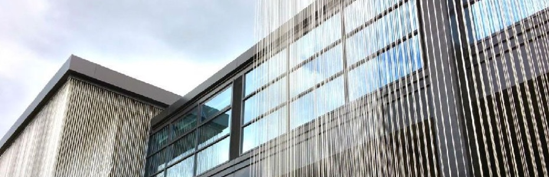

乌村+乌镇互联网国际会展中心观光游套餐
by 乌村村委会
为了更好展现世界互联网大会·乌镇峰会永久会址的魅力，传播互联网文化，乌镇互联网国际会展中心将与4月1日起正式对外开放啦！具体开放时间为9：00—17:00，近期开放的主要是会议中心部分场所和接待中心。如遇重大活动或场馆保养等特殊情况，相关区域将暂停对外开放，具体以现场公告和在线预订平台公告为准。 目前已推出乌村+乌镇互联网国际会展中心观光游套餐，价格为100元 /人。更有乌镇景区门票+观光游套餐的优惠套餐可供选择。 除现场购买套餐外，游客朋友还可通过乌镇旅游预订网：www.ewuzhen.com，乌镇旅游手机网：m.wuzhen.com.cn提前网络预订。
-
乌村游览（不含餐、小吃及活动体验）
-
参观乌镇互联网国际会展中心
1.可提前预订15天内的产品，如乌镇互联网国际会展中心遇临时性重大活动或场馆保养等问题确实无法对外开放时，我们将提前通知您，需要您调整游览行程，谢谢配合。
2.场地开放时间：乌村09：00-20：00；乌镇互联网国际会展中心09：00—17：00，17：00后进入的客人只能远眺乌镇互联网国际会展中心外观，请您合理安排行程；
3.购买该产品，请于游玩当天16：00前凭预订人姓名及手机短信至乌村销售处换取入园套餐券（乌村销售处位于乌镇环河路尽头右转800米左右）；
4.使用有效期：套餐券当日进出一次有效，不能重复使用；
5.退换规则：如需退换，请至少提前一天及以上通过此网站提交申请, 逾期不接受退换；
6.为保证乌镇互联网国际会展中心的参观效果，请服从现场工作人员的管理，有序排队入场。
点击此处查看套餐详细优惠政策
1.乌村内河道密布，水深危险，请注意安全，未成年人必须有成人监护并保持随时照顾；
2.乌村不得携带宠物入内；
3.未经许可，不可进行超出正常游览观光用途的摄影、摄像、录音、航拍或任何形式的记录、广播或传送，包括但不限于：借用专业摄影、摄像器材、辅助道具、非日常生活服装进行拍摄等（如有婚纱摄影类需求，须先向景区管理部门提交申请，获准后，签订拍摄协议并支付相关费用，按协议和相关规定在指定区域开展活动，建议事先向景区管理方咨询）。